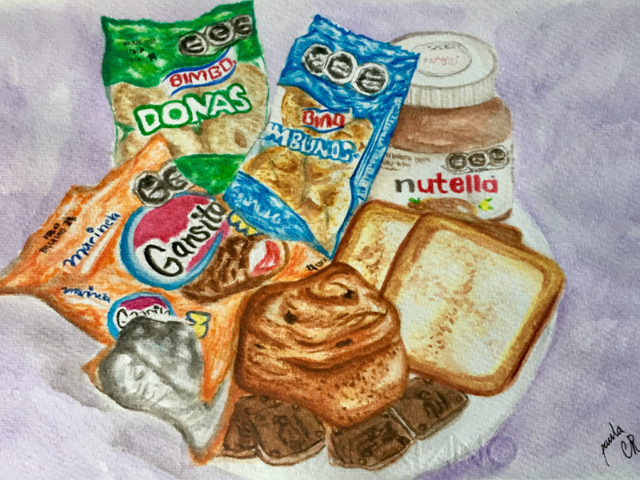
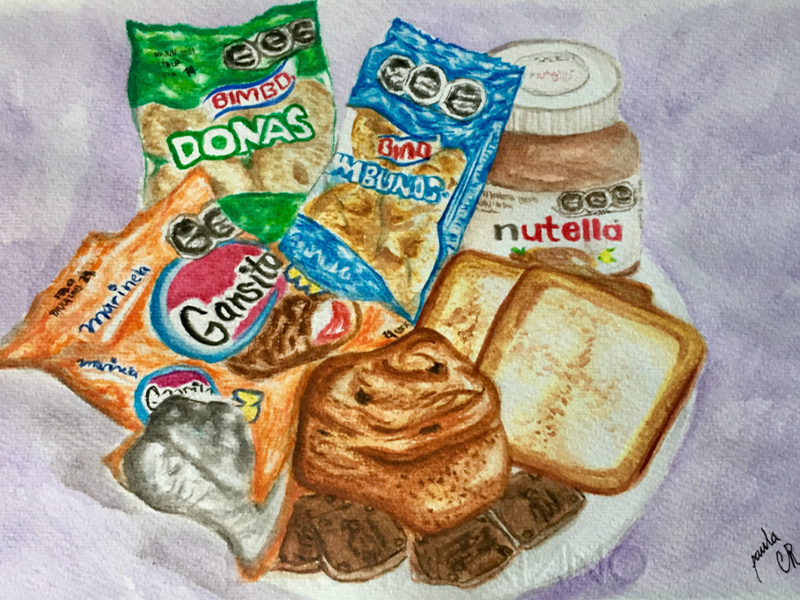

Obras Tintra/Acuarela

 

Desayuno en pandemia (acuarela 17.3x 25cm 2021)
Mi bodegón consiste en un desayuno mexicano que puedo observar en la actualidad gracias a la gran industrialización y confinamiento que vivimos hoy en día por la globalización y, como resultado, la pandemia. En México se acostumbra tener desayunos tradicionales que reflejan la cultura de nuestro país, sin embargo, muchos factores han provocado la pérdida y la ironía de lo que solíamos llamar tradicional. Muchos artistas tienden a hacer bodegones muy generalizados y sobre todo muy influenciados por otras culturas distintas a las de México, pero, por otro lado, hay otros artistas como María Izquierdo, Frida Kahlo e incluso, Olga Costa, que al igual que yo tienen el propósito de representar nuestras pequeñas costumbres que hacen único a nuestro país. Este tiempo de confinamiento por el Covid-19 provocó y perjudicó muchos puestos, locales de comida y restaurantes al grado de tener que cerrar sus puertas, dejando como únicos proveedores de alimentos a las grandes tiendas industrializadas, como el Oxxo, para llevar el desayuno a casa., es por eso que este bodegón tiene un carácter estético realista, ya que a base de supervivencia se ha hecho costumbre un desayuno como el de la obra. Con el fin de ilustrar el bodegón con propios elementos de los alimentos representados, se utiliza la técnica mixta, destacando la acuarela como material principal de la composición.
Tortura emocional (acuarela 17.3x 25cm. 2021)
La obra consiste en una acuarela cuyo objetivo es mostrar el resultado de vivir con un trastorno de conducta alimenticio, a pesar de no ser “grave” , mucha de la experiencia que tuve la quise reflejar desde un ámbito emocional, ya que lo que más se me dificultaba era admitir que tenía un problema y me atormentaba pensando que nunca iba a ser suficiente, que por más que lo intentara no podía mentalizarme que necesitaba ayuda ya que día a día me menospreciaba y no tenía la fuerza de afrontar las cosas. Las palabras que se pueden leer en la obra son pensamientos que tuve y sigo teniendo derivados del constante pensamiento de querer ser, verse y sentirse como los demás, generando a su vez un sinfín de culpabilidad, tristeza y enojo por comparar mi cuerpo con los de otros.